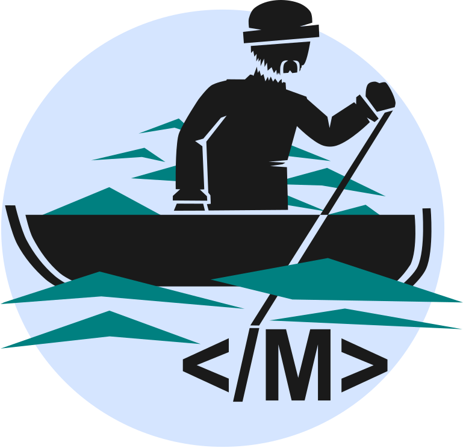
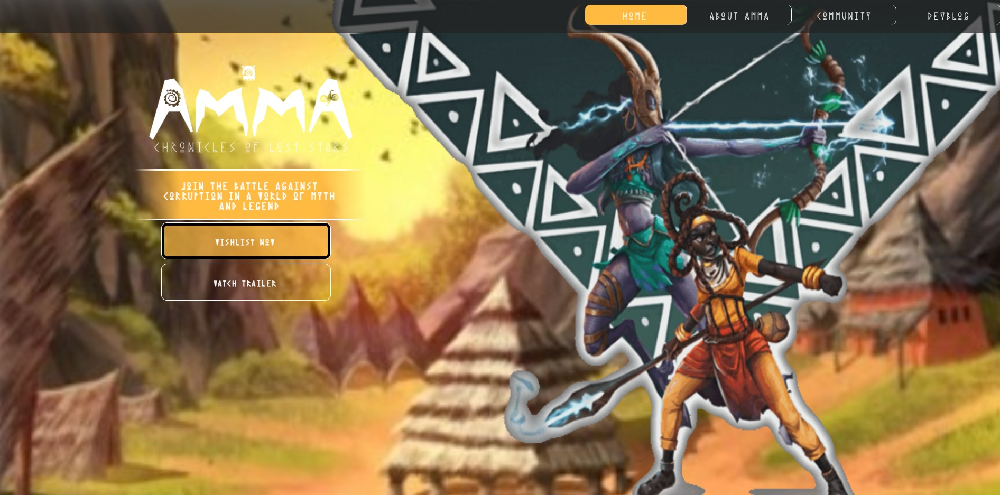
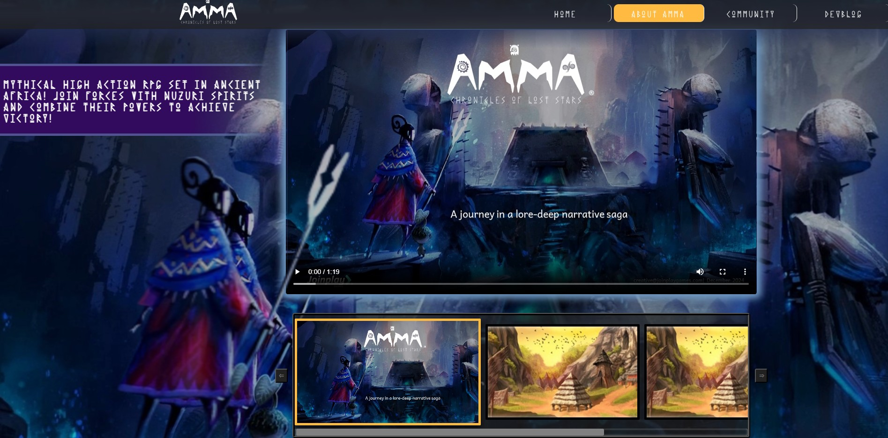
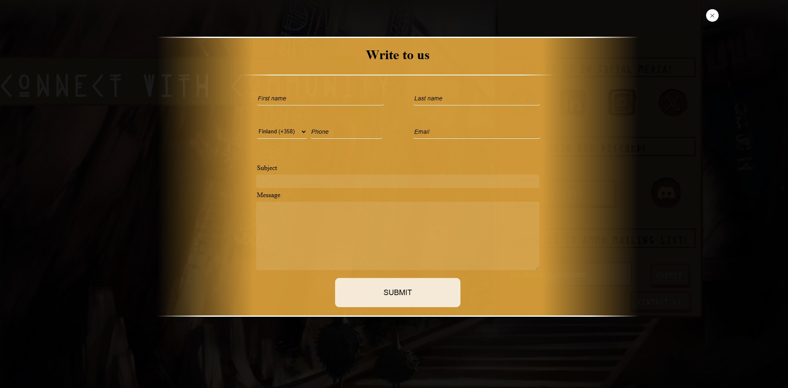
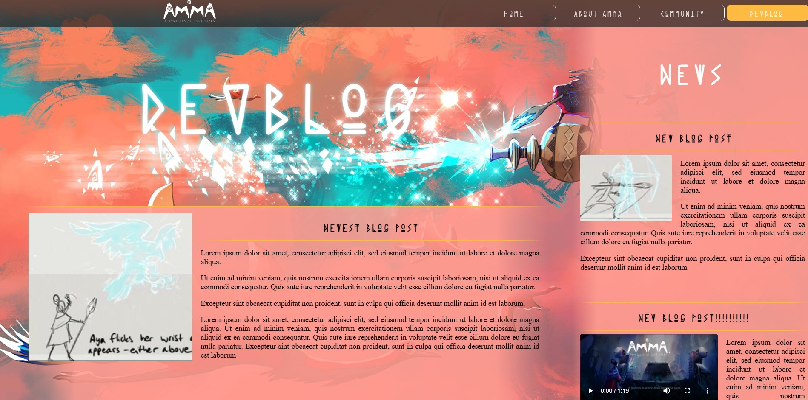

Tämä sivusto on minun tekemäni. Html+JavaScrip+scss. Alla esimerkkejä muista projekteista.
Nettisivutyökalut
Web-component:teihin perustuvia työkaluja nettisivujen luomisen helpottamiseksi. Henkilökohtainen projektini, jonka lopullinen tarkoitus on tarjota nopeasti tuotettuja ja siten halpoja nettisivuja. Pyrin myös tekemään niistä helposti muokattavia, jotta kuka tahansa voi päivittää sivujen sisältöä ilman ohjelmointitaustaa. Kehitystyö on vielä kesken, mutta alla olevasta linkistä voi tarkastella, mitä olen jo luonut.

Amma: ColS nettisivut
Viimeisin projektini PHP:llä oli nettisivut Joinplay Games Studios:sille. He tarvitsivat sivut tulevan pelinsä (Amma: Chronicles of lost Stars) mainostamiseen. Projektiin liittyi sivuston visuaalisen ilmeen toteuttaminen ja sivuston toiminnalliseuudet. Myöhemmin toteutin myös yhteydenottosysteemin ja sivujen sisällön lataamisen erikseen taustajärjestelmästä editoinnin helpottamiseksi.







Weather or Not
Toimiva sääsovellus, jonka tein yhden kurssini lopputyönä. Ei varsinaisesti ole web-sovellus, mutta hyödyntää erään nettisivun dataa toimiakseen. Kykenee antamaan säätietoja käyttäjän nykyisen olinpaikan perusteella, joko reaaliaikaisesti tai seuraavan seitsemän päivän ajalta. Noiden päivien säätiedoja voidaan myös tarkastella tarkemmin.